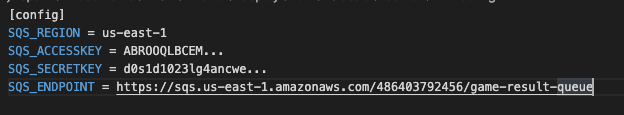
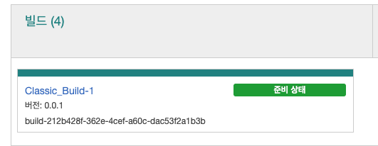

게임 서버 빌드 & 플릿 생성
GameLift 서비스와 함께 게임 서버 구축
이제 서버 바이너리를 Gamelift 서비스와 함께 동작하도록 구성하는 작업을 시작하겠습니다.
-
이번 실습에는 이미 컴파일된 서버 바이너리가 준비되어 있지만, 직접 컴파일 하고 싶으실 경우 Appendix 를 참조할 수 있습니다.
-
제공된 소스코드 또는 바이너리의 루트 폴더에서 bin/Classic/server 폴더를 확인하시면 GomokuServer.exe, aws-cpp-sdk-*.dll, config.ini, install.bat, aws-cpp-sdk-gamelift-server.dll 등 파일을 확인하실 수 있습니다. 그중에서도 vc_redist.x86.exe 파일이 있는지 확인합니다. 실습을 위해 사용된 바이너리는 Visual Studio 환경에서 제작되었으므로 배포용 환경 구성을 위해 필요합니다.
-
텍스트 편집기를 통하여 config.ini 파일을 수정합니다. SQS_REGION 는 SQS를 생성한 Region입니다. (예: ap-northeast-2). SQS_ENDPOINT 에는 SQS의 Endpoint를 입력합니다. SQS_ACCESSKEY 와 SQS_SECRETKEY 에 IAM 사용자의 AccessKey 와 Secret AccessKey 를 입력합니다. (AccessKey 와 SecretAccessKey 를 전달하도록 구성하는 것은 단지 실습의 편의성을 위함입니다. 실제 계정을 사용하신다면 설정이 외부에 노출되지 않도록 유의합니다.)
본 실습의 바이너리는 IAM 역할이 지원되기 이전에 만들어졌으며, 실습의 편의를 위해 Credential 을 전달합니다. 현재는 Credential 을 직접 전달할 필요가 없으며, Best Practice 는 IAM Role 을 사용하는 것입니다. 관련 내용은 FlexMatch 실습을 통해 참고해보실 수 있습니다.
만약 Mac 이나 Windows 환경에서 파일을 작업하고, 별도의 윈도우로 배포하고 계시다면 텍스트 파일 포맷에 유의합니다. 특히 윈도우에서의 New Line 포맷은 CRLF 로 차이가 있고, 이는 설정 내용 파싱에 영향을 줄 수 있습니다.

- CLI 를 이용해 GameLift 바이너리를 빌드합니다. 현재 GameLift 는 업로드의 복잡성으로 인해 CLI 를 통한 업로드를 지원합니다. CLI 환경이 구성되어 있지 않다면 (0-2. 실습 사전 준비 파트)를 참고합니다. 빌드의 경로와 설정하게될 GameLift 콘솔에서 실행파일(exe)의 경로가 일치해야하므로, GomokuServer.exe 바이너리를 포함한 경로에서 명령어를 실행하시는 것을 추천합니다.
aws gamelift upload-build --name "Classic_Build-1" --build-version "0.0.1" --build-root . --region us-east-1
-
업로드할 때 실습 Region 을 올바르게 설정했는지 확인합니다.
-
진행하는 중 콘솔의 GameLift 서비스로 가면 빌드가 업로드 되는 것을 확인할 수 있습니다. https://console.aws.amazon.com/gamelift

- 빌드가 성공하면 위의 그림처럼 활성화됩니다. 성공한 빌드로부터 Fleet 을 생성해봅시다.

- 다음과 같이 설정값을 입력해줍니다.
플릿 유형에서 스팟 타입을 선택하시면, 스팟 플릿 형태로 GameLift 인스턴스 플릿을 구성하실 수 있습니다. GameLift 는 중단 확률이 가장 낮은 인스턴스 유형에 스팟 인스턴스를 배치하여 중단률 및 비용이 가장 낮은 플릿을 선택합니다.
이 기능을 통해 매우 비용 효율적으로 GameLift 서비스를 이용하실 수 있습니다.

- Name: GomokuGameServerFleet-1
- Instance type: c3.large or c4.large
- Launch path: GomokuServer.exe
- Concurrent processes: 50
- EC2 Port settings
- Port range: 49152-60000
- Protocol: TCP
- IP address range: 0.0.0.0/0

설정이 완료되면 Initialize Fleet 을 통해 플릿을 생성합니다. 작업은 20분정도 시간이 소요됩니다.

완료된 플릿은 위와 같은 상태로 바뀌어야 합니다. 플릿이 생성되는 동안 Alias 를 구성해보겠습니다.
- GameLift 메뉴를 열고 별칭 생성 메뉴를 클릭합니다.

- 적합한 별칭을 지정하고, 라우팅 유형을 Simple 로 선택해줍니다. 다음과 같이 Alias 에 생성 중인 Fleet 을 연결해줍니다.

이제 Fleet 에 접근하기 위해 Alias 를 사용할 것입니다. 별칭 ID 를 기록해둡니다. 다음으로 매치메이킹 서버를 구성해보겠습니다.